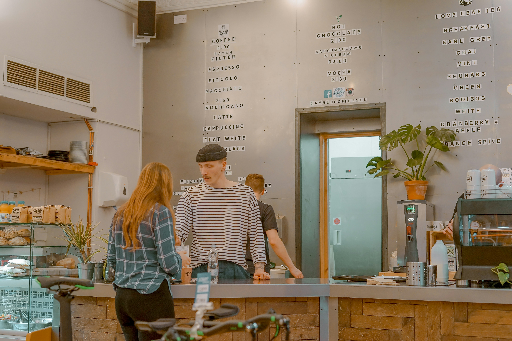

About Us

Our Story
Savanna Brew Café opened in 2019 with one small espresso machine and a big dream: to celebrate Kenyan coffee. Founder Amina Otieno grew up on her grandparents' coffee farm in Nyeri and wanted to bring that flavour to the city. Today the café supports local farmers, uses eco-friendly packaging and hosts community events every month.
Our Values
- Quality: only freshly roasted, single-origin Kenyan beans.
- Community: fair prices for farmers and a welcoming space for all.
- Sustainability: compostable cups and zero-waste pastries.
"Every cup we serve carries the story of the farmers who grew it."